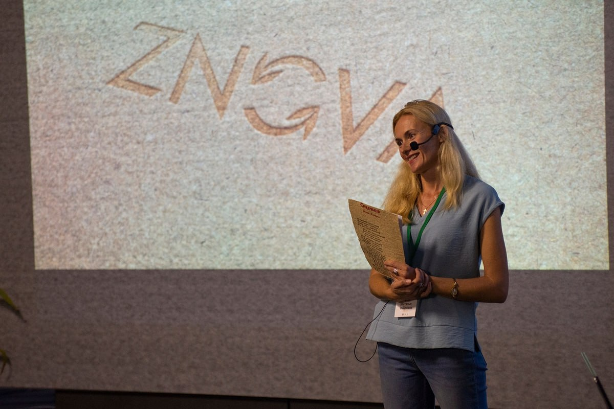
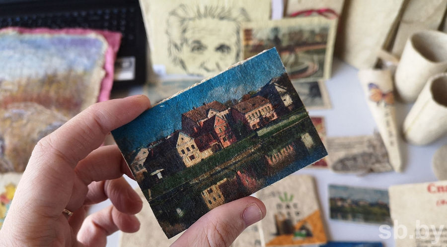

О НАС

«Znova» – это локальный проект, который представляет собой устойчивый бизнес для жителей поселка Зельва в Беларуси.
Жители этого поселка сталкиваются с проблемами малой занятости, отсутствием дополнительного заработка и экологической проблемой зарастания водоемов.
Автор идеи Наталья Гром, преподаватель химии, и ее команда решили создать мастерскую по изготовлению бумаги из тростника.
Данный проект реализуется в школе поселка и предоставляет возможность людям быть полезными и иметь дополнительный заработок.
С ЧЕГО ВСЕ НАЧАЛОСЬ

Наталья Гром рассказывает, как у нее родилась идея изготовления бумаги из тростника:
— Мы с мужем часто начинаем день с зарядки, а после совершаем утренние заплывы в местном водоеме. И однажды муж сказал:
«Подожди, не плыви, я тебе «прополю» дорожку».
Настолько водоем зарос тростником. И я поняла, что с этим нужно что-то делать. Иначе еще чуть-чуть — и по водоему можно будет ходить.
И ведь это проблема не только нашего поселка — 53 % водоемов Беларуси требуют очистки. Вспомнила, что видела в интернете, как из тростника делают бумагу.
Решила попробовать — и получила первый лист!
ЭКСКЛЮЗИВНАЯ СУВЕНИРНАЯ ПРОДУКЦИЯ ZNOVA
Продукция из тростниковой бумаги может заинтересовать тех, кто ценит эксклюзивность и уникальность продуктов.
Бумага бренда «Znova» может стать интересным подарком для друзей и близких, а также использоваться в различных бизнес-целях,
например, для создания визиток или приглашений.
НАГРАДЫ

Масштабный республиканский конкурс экологических проектов Belarus Green Award проходил с июля по сентябрь 2020r.
На первом этапе были представлены 58 проектов, в финал вышли 7.
«Все они интересные, все направлены на экологическую безопасность, охрану окружающей среды, вовлечение отходов в хозяйственный оборот
и другие важные задачи. Они стоят того, чтобы на них обратить внимание», — отметил на финальном мероприятии министр природных ресурсов и охраны окружающей среды Андрей Худык.
Абсолютно все финалисты получили от организаторов денежные призы. А главная награда — 30 000 рублей — досталась проекту
гимназии № 1 г.п. Зельва ZNOVA по производству бумаги из тростника.